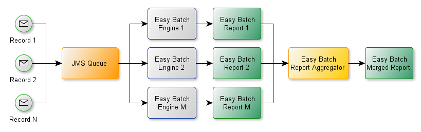

In this tutorial, we will see how to use Easy Batch to asynchronously process data from a JMS queue:

We will create a custom record reader that pulls data from the JMS queue. To distribute the work, messages posted to the queue will be processed by several Easy Batch engines.
We will use the same resources as in the Hello World tutorial (greetings CSV data and Greeting POJO) to create the application:
sequence,name 1,foo 2,bar 3,bax 4,baz
public class Greeting {
private long sequence;
private String name;
//Getters and setters omitted
}
Let's get started!
The main point in this tutorial is how to read data from the JMS queue. We will implement a custom record reader that will pull data from the queue. So here is the implementation:
public class GreetingJmsReader implements RecordReader {
private int id;
private int currentRecordNumber;
QueueConnection queueConnection;
QueueSession queueSession;
QueueReceiver queueReceiver;
Queue queue;
private boolean stop;
public GreetingJmsReader(int id) {
this.id = id;
}
@Override
public void open() throws Exception {
Properties p = new Properties();
p.load(GreetingJmsReader.class.getResourceAsStream(("/jndi.properties")));
Context jndiContext = new InitialContext(p);
QueueConnectionFactory queueConnectionFactory =
(QueueConnectionFactory) jndiContext.lookup("QueueConnectionFactory");
queue = (Queue) jndiContext.lookup("q");
queueConnection = queueConnectionFactory.createQueueConnection();
queueSession = queueConnection.createQueueSession(false, Session.AUTO_ACKNOWLEDGE);
queueReceiver = queueSession.createReceiver(queue);
queueConnection.start();
}
@Override
public boolean hasNextRecord() {
return !stop;
}
@Override
public Record readNextRecord() throws Exception {
String record;
Message m = queueReceiver.receive();
TextMessage message = (TextMessage) m;
record = message.getText();
stop = record.equalsIgnoreCase("quit");
System.out.println("Greeting Reader " + id + " : received JMS message: " + record);
return new StringRecord(++currentRecordNumber, record);
}
@Override
public Long getTotalRecords() {
//undefined, cannot be calculated in advance
return null;
}
@Override
public String getDataSourceName() {
try {
return "JMS queue: " + queue.getQueueName();
} catch (JMSException e) {
throw new RuntimeException("Unable to get queue name", e);
}
}
@Override
public void close() throws Exception {
if (queueConnection != null) {
queueConnection.close();
}
if (queueSession != null) {
queueSession.close();
}
if (queueReceiver != null) {
queueReceiver.close();
}
}
}
The implementation is self explanatory: the reader uses a JMS connection factory and reads greetings records from the queue named q until it receives the message quit.
Now let's create 2 Easy Batch instances to process data posted to the JMS queue:
public class Launcher {
public static void main(String[] args) throws Exception {
//start embedded JMS broker
JMSUtil.startBroker();
// Build 2 easy batch engines
EasyBatchEngine easyBatchEngine1 = buildEasyBatchEngine(1);
EasyBatchEngine easyBatchEngine2 = buildEasyBatchEngine(2);
//create a 2 threads pool to call Easy Batch engines in parallel
ExecutorService executorService = Executors.newFixedThreadPool(2);
executorService.submit(easyBatchEngine1);
executorService.submit(easyBatchEngine2);
executorService.shutdown();
}
public static EasyBatchEngine buildEasyBatchEngine(int id) {
return new EasyBatchEngineBuilder()
.registerRecordReader(new GreetingJmsReader(id))
.registerRecordMapper(new DelimitedRecordMapper(Greeting.class, new String[]{"sequence","name"}))
.registerRecordProcessor(new GreetingSlowProcessor())
.build();
}
}
To keep the tutorial simple, we will use an embedded message broker. The broker setup details are not shown here for readability sake.
To send greetings records as JMS messages to the queue, we will use the following utility class:
public class JMSSenderLauncher {
public static void main(String[] args) throws Exception {
//init JMS factory and session
JMSUtil.initJMSFactory();
// Send some messages to JMS queue
Scanner scanner = new Scanner(System.in);
String input;
do {
input = scanner.nextLine();
JMSUtil.sendJmsMessage(input);
} while (!input.equalsIgnoreCase("quit"));
}
}
This class makes the tutorial interactive : we will type in data in the console and see how and which Easy Batch instance will process it.
That's all, we can now run the tutorial and see the results.
The complete source code of this tutorial is available here.
To run the tutorial with maven, first launch the following command in the easybatch-tutorials directory :
mvn exec:java -PrunJmsTutorial
This will start the embedded broker and Easy Batch instances that will listen to JMS messages posted to the queue. Then launch the JMS sender utility class in a separate console to be able to send data to the queue:
mvn exec:java -PrunJmsSender
You will be able to type in CSV greetings records in the console and see which Easy Batch engine has processed the record and what was the processing result. Here is a sample output:
1,foo Message '1,foo' sent to JMS queue 2,bar Message '2,bar' sent to JMS queue
INFO: Initializing easy batch engine INFO: Data source: JMS queue: q INFO: Total records = N/A INFO: easy batch engine is running... Greeting Reader 2 : received JMS message: 1,foo Hi foo! Your sequence number is 1 Greeting Reader 1 : received JMS message: 2,bar Hi bar! Your sequence number is 2
In this tutorial, we have seen how to use Easy Batch along with JMS to create an asynchronous batch application.
We have implemented a custom record reader that reads data from a JMS queue. To distribute the work across multiple Easy Batch instances, we have used
a thread pool through the ExecutorService and submitted Easy Batch instances to it. This tutorial shows a powerful technique to distribute data processing
across multiple Easy Batch "workers" asynchronously.